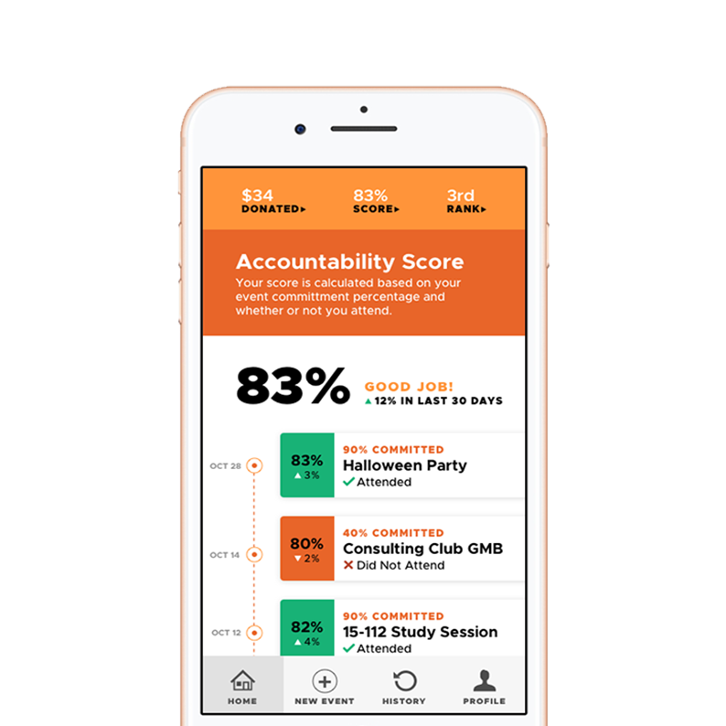

<!DOCTYPE html>
<html>

  <head>
    <title>Emily Porat | Archive</title>
    <link rel="stylesheet" type="text/css" href="styles/global2.css">
    <link rel="stylesheet" type="text/css" href="styles/home.css">
    <link rel="stylesheet" type="text/css" href="styles/archive.css">
    <link rel="stylesheet" type="text/css" href="styles/nav.css">
    <link rel="stylesheet" type="text/css" href="styles/contact.css">
    <script src="https://ajax.googleapis.com/ajax/libs/jquery/1.9.1/jquery.min.js"></script>
    <link rel="shortcut icon" type="image/x-icon" href="pics/favicon.ico" />
    <link rel="stylesheet" href="https://cdnjs.cloudflare.com/ajax/libs/font-awesome/4.7.0/css/font-awesome.min.css">
    <!-- Global site tag (gtag.js) - Google Analytics -->
    <script async src="https://www.googletagmanager.com/gtag/js?id=UA-119412150-1"></script>
    <script>
      window.dataLayer = window.dataLayer || [];
      function gtag(){dataLayer.push(arguments);}
      gtag('js', new Date());

      gtag('config', 'UA-119412150-1');

      // load other reused files
      $(function() {
      	$('#nav').load('http://emilyporat.com/nav.html');
      	$('#footer').load('http://emilyporat.com/footer.html');
      });
    </script>
  </head>

  </html>
  <body>
    <meta name="viewport" content="width=device-width">
    <div id="nav"></div>
	
	
	<div style="margin-left: 12%; margin-right: 12%; margin-bottom: 12%">
        <div style="font-family:'Tokyo-Outline'; text-align: center; font-size: 64px; padding-top: 10%":>ALL PROJECTS</div>

        <div class="year-title" style="padding-top: 8vh">2019</div>
        <div id="archive-projects">
        
        <a class="section" href="justharvest.html">
          
          <div class="overlay" style="background-color: #E4E7E0;">
	        <div class="archive-caption" style="color: black">
	        <div class="project-title">Just Harvest Community Table</div>
	        A service solution that mutually benefits the nonprofit Just Harvest and the food insecure individuals it serves.</div>
          </div>
        </a>

        <a class="section" href="rsvpd.html" >
          
          <div class="overlay" style="background-color: #ff943a">
          <div class="archive-caption">
            <div class="project-title">RSVPd</div>
              A mobile app that helps event planners predict attendance by providing predictability, motivation, and accountability.
          </div>
          </div> 
        </a>

        <a class="section" href="l&d.html">
          
          <div class="overlay" style="background-color: #49ce5c">
          <div class="archive-caption">
            <div class="project-title">L&D Portal</div>
              A website through which employees request continuing education programs.
          </div>
          </div>
        </div>
        </a>


        <div class="year-title">2018</div>
        
        <div id="archive-projects">
        
        <a class="section" href="chutzpow.html" >
          
          <div class="overlay" style="background-color: rgb(24,163,152)">
          <div class="archive-caption">
            <div class="project-title">Chutz-Pow!</div>
              An interactive, online version of ChutzPow, the Pittsburgh Holocaust Center's comic book series.
          </div>
          </div>
        </a>

        <a class="section" href="zensors.html">
          
          <div class="overlay" style="background-color: #33312E">
          <div class="archive-caption">
            <div class="project-title">Zensors</div>
              A user interface for crowdworkers to answer questions about images captured from sensors.
          </div>
          </div>
        </a>

        <a class="section" href="newstagram.html">
          
          <div class="overlay" style="background-color: #662C92">
          <div class="archive-caption">
            <div class="project-title">Newstagram</div>
              A redesigned version of Instagram with the goal of promoting authenticity.
          </div>
          </div> 
        </div>
        </a>
		
		<div class="year-title">2017</div>

		<div id="archive-projects">
        
        <a class="section" href="upark.html">
          
          <div class="overlay" style="background-color: #EE6B4D">
          <div class="archive-caption">
            <div class="project-title">UPark</div>
            A mobile app that connects unused driveways with those in need of a place to park.
            </div>
            </div>
        </a> 


        <a href="miles.html" class="section">
          
          <div class="overlay" style="background-color: #2E8FEA">
          <div class="archive-caption">
            <div class="project-title">Miles</div>
            A conversational user interface for owners of self-driving cars
            </div>
            </div> 
        </a>


        <a href="atlantis.html" class="section">
          
          <div class="overlay" style="background-color: #FEE469; color: black">
          <div class="archive-caption" style="color: black">
            <div class="project-title">Atlantis Hub</div>
            A data-driven environmental display featuring information about planes, trains, and ferries.
            </div>
            </div>
        </a>
	</div>
	
	</div>
  	</div>
  	<div id="footer"></div>
  	</meta>
  </body>

  <script src="js/general.js"></script>

</html>